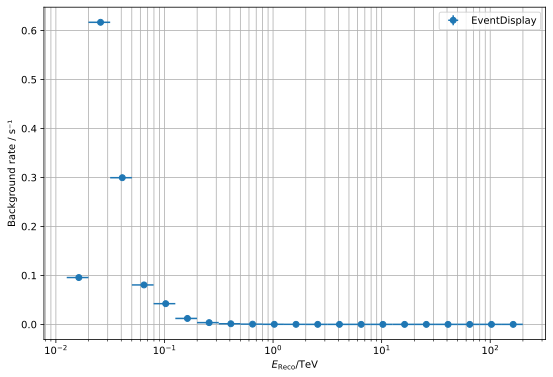

Comparison with EventDisplay¶
Purpose of this notebook:
Compare IRF and Sensitivity as computed by pyirf and EventDisplay on the same DL2 results
Notes:
The following results correspond to:
Paranal site
Zd 20 deg, Az 180 deg
50 h observation time
Resources:
EventDisplay DL2 data, https://forge.in2p3.fr/projects/cta_analysis-and-simulations/wiki/Eventdisplay_Prod3b_DL2_Lists
Download and unpack the data using
$ curl -fL -o data.zip https://nextcloud.e5.physik.tu-dortmund.de/index.php/s/Cstsf8MWZjnz92L/download
$ unzip data.zip
$ mv eventdisplay_dl2 data
Table of contents¶
[1]:
import os
import numpy as np
import uproot
from astropy.io import fits
import astropy.units as u
import matplotlib.pyplot as plt
from astropy.table import QTable
%matplotlib inline
[2]:
plt.rcParams['figure.figsize'] = (9, 6)
[3]:
# Path of EventDisplay IRF data in the user's local setup
# Please, empty the indir_EventDisplay variable before pushing to the repo
indir = "../../data/"
irf_file_event_display = "DESY.d20180113.V3.ID0_180degNIM2LST4MST4SST4SCMST4.prod3b-paranal20degs05b-NN.S.3HB9-FD.180000s.root"
irf_eventdisplay = uproot.open(os.path.join(indir, irf_file_event_display))
The following is the current IRF + sensititivy output FITS format provided by this software.
Run python examples/calculate_eventdisplay_irfs.py after downloading the data
[4]:
pyirf_file = '../../pyirf_eventdisplay.fits.gz'
Optimized cuts¶
Direction cut¶
[5]:
from astropy.table import QTable
rad_max = QTable.read(pyirf_file, hdu='RAD_MAX')[0]
theta_cut_ed = irf_eventdisplay['ThetaCut;1']
plt.errorbar(
10**theta_cut_ed.edges[:-1],
theta_cut_ed.values**2,
xerr=np.diff(10**theta_cut_ed.edges),
ls='',
label='EventDisplay',
)
plt.errorbar(
0.5 * (rad_max['ENERG_LO'] + rad_max['ENERG_HI'])[1:-1].to_value(u.TeV),
rad_max['RAD_MAX'].T[1:-1, 0].to_value(u.deg)**2,
xerr=0.5 * (rad_max['ENERG_HI'] - rad_max['ENERG_LO'])[1:-1].to_value(u.TeV),
ls='',
label='pyirf',
)
plt.legend()
plt.ylabel('θ²-cut / deg²')
plt.xlabel(r'$E_\mathrm{reco} / \mathrm{TeV}$')
plt.xscale('log')
plt.yscale('log')
None # to remove clutter by mpl objects

[6]:
from astropy.table import QTable
gh_cut = QTable.read(pyirf_file, hdu='GH_CUTS')[1:-1]
plt.errorbar(
0.5 * (gh_cut['low'] + gh_cut['high']).to_value(u.TeV),
gh_cut['cut'],
xerr=0.5 * (gh_cut['high'] - gh_cut['low']).to_value(u.TeV),
ls='',
label='pyirf',
)
plt.legend()
plt.ylabel('G/H-cut')
plt.xlabel(r'$E_\mathrm{reco} / \mathrm{TeV}$')
plt.xscale('log')
None # to remove clutter by mpl objects

Differential sensitivity from cuts optimization¶
[7]:
# [1:-1] removes under/overflow bin
sensitivity = QTable.read(pyirf_file, hdu='SENSITIVITY')[1:-1]
sensitivity
[7]:
QTable length=21
| reco_energy_low | reco_energy_high | reco_energy_center | n_signal | n_signal_weighted | n_background | n_background_weighted | relative_sensitivity | flux_sensitivity |
|---|---|---|---|---|---|---|---|---|
| TeV | TeV | TeV | 1 / (cm2 s TeV) | |||||
| float64 | float64 | float64 | int64 | float64 | int64 | float64 | float64 | float64 |
| 0.012589254117941675 | 0.0199526231496888 | 0.016270938633815235 | 10130 | 40736.04397209037 | 2038 | 1580261.7300930936 | 0.0354661174423566 | 4.8719077096155116e-08 |
| 0.0199526231496888 | 0.03162277660168379 | 0.025787699875686295 | 73302 | 235667.17637164632 | 7116 | 4488516.609861818 | 0.010318598846677325 | 4.241369740881345e-09 |
| 0.03162277660168379 | 0.05011872336272722 | 0.04087074998220551 | 94884 | 235654.45118582936 | 4079 | 1877781.1237390414 | 0.006681303696225585 | 8.217630653738227e-10 |
| 0.05011872336272722 | 0.07943282347242814 | 0.06477577341757768 | 105771 | 198164.74815394962 | 1809 | 583055.6914147474 | 0.004437551504208009 | 1.6331602898662181e-10 |
| 0.07943282347242814 | 0.12589254117941667 | 0.1026626823259224 | 148820 | 206545.12350734416 | 1276 | 220428.5062482953 | 0.0026262871058112397 | 2.8921952351124578e-11 |
| 0.12589254117941667 | 0.1995262314968879 | 0.1627093863381523 | 159947 | 165880.4888816647 | 810 | 89318.9150870759 | 0.0020915744765543313 | 6.892213757514391e-12 |
| 0.1995262314968879 | 0.3162277660168378 | 0.2578769987568628 | 129592 | 101288.00917457463 | 407 | 23794.4801540412 | 0.0017895711207727674 | 1.764551619471606e-12 |
| 0.3162277660168378 | 0.501187233627272 | 0.4087074998220549 | 130297 | 77142.62109944946 | 289 | 12246.429989691824 | 0.0017021293028612972 | 5.022014394405305e-13 |
| 0.501187233627272 | 0.7943282347242809 | 0.6477577341757765 | 99017 | 44070.94837706722 | 149 | 2867.9227279555053 | 0.0014935844963590908 | 1.3186064681749542e-13 |
| 0.7943282347242809 | 1.2589254117941662 | 1.0266268232592235 | 58620 | 19457.518298366573 | 40 | 402.6464624889195 | 0.0014040018140887211 | 3.7089678925276625e-14 |
| 1.2589254117941662 | 1.9952623149688768 | 1.6270938633815215 | 74782 | 18602.04269592394 | 62 | 478.4299412686378 | 0.0015807254187006502 | 1.2495160581195685e-14 |
| 1.9952623149688768 | 3.162277660168376 | 2.5787699875686263 | 55020 | 10343.023774086963 | 56 | 95.22847247868776 | 0.0014838553597958568 | 3.509756399540882e-15 |
| 3.162277660168376 | 5.01187233627272 | 4.087074998220548 | 71763 | 10169.224068828626 | 71 | 130.39034028351307 | 0.0017000929432846007 | 1.2032560930773431e-15 |
| 5.01187233627272 | 7.943282347242805 | 6.477577341757763 | 37310 | 4000.910445816815 | 38 | 11.444074984639883 | 0.0019436937456985 | 4.1163589829223715e-16 |
| 7.943282347242805 | 12.58925411794165 | 10.266268232592228 | 49375 | 3953.142505228054 | 49 | 90.35170052200556 | 0.0038073184805542002 | 2.4127071527164785e-16 |
| 12.58925411794165 | 19.95262314968877 | 16.27093863381521 | 23033 | 1388.1231467190664 | 19 | 22.915754321962595 | 0.006820174139734937 | 1.2932451801578852e-16 |
| 19.95262314968877 | 31.62277660168376 | 25.787699875686265 | 21736 | 981.8898907196708 | 10 | 22.192615054547787 | 0.009548915790577157 | 5.418005833156857e-17 |
| 31.62277660168376 | 50.118723362727145 | 40.87074998220545 | 16414 | 555.7576898394618 | 9 | 83.76343133300543 | 0.026336454243801686 | 4.4713916249131335e-17 |
| 50.118723362727145 | 79.43282347242797 | 64.77577341757755 | 11294 | 287.558115294436 | 7 | 21.333646059036255 | 0.03222154687642929 | 1.636936342552799e-17 |
| 79.43282347242797 | 125.89254117941648 | 102.66268232592222 | 7370 | 140.16462298179977 | 10 | 17.69979313760996 | 0.06257589985180609 | 9.512452658585113e-18 |
| 125.89254117941648 | 199.52623149688768 | 162.7093863381521 | 4683 | 66.36008781543933 | 8 | 37.217249877750874 | 0.16628502112169274 | 7.563773839933875e-18 |
[8]:
plt.figure(figsize=(12,8))
# Get data from event display file
h = irf_eventdisplay["DiffSens"]
bins = 10**h.edges
x = 0.5 * (bins[:-1] + bins[1:])
width = np.diff(bins)
y = h.values
plt.errorbar(
x,
y,
xerr=width/2,
yerr=None,
label="EventDisplay",
ls=''
)
unit = u.Unit('erg cm-2 s-1')
e = sensitivity['reco_energy_center']
s = (e**2 * sensitivity['flux_sensitivity'])
plt.errorbar(
e.to_value(u.TeV),
s.to_value(unit),
xerr=(sensitivity['reco_energy_high'] - sensitivity['reco_energy_low']).to_value(u.TeV) / 2,
ls='',
label='pyirf'
)
# Style settings
plt.title('Minimal Flux Needed for 5σ Detection in 50 hours')
plt.xscale("log")
plt.yscale("log")
plt.xlabel("Reconstructed energy [TeV]")
plt.ylabel(rf"$(E^2 \cdot \mathrm{{Flux Sensitivity}}) /$ ({unit.to_string('latex')})")
plt.grid(which="both")
plt.legend()
None # to remove clutter by mpl objects

IRFs¶
Effective area¶
[9]:
# Data from EventDisplay
h = irf_eventdisplay["EffectiveAreaEtrue"]
x = 0.5 * (10**h.edges[:-1] + 10**h.edges[1:])
xerr = 0.5 * np.diff(10**h.edges)
y = h.values
yerr = np.sqrt(h.variances)
plt.errorbar(x, y, xerr=xerr, yerr=yerr, ls='', label="EventDisplay")
for name in ('', '_NO_CUTS', '_ONLY_GH', '_ONLY_THETA'):
area = QTable.read(pyirf_file, hdu='EFFECTIVE_AREA' + name)[0]
plt.errorbar(
0.5 * (area['ENERG_LO'] + area['ENERG_HI']).to_value(u.TeV)[1:-1],
area['EFFAREA'].to_value(u.m**2).T[1:-1, 0],
xerr=0.5 * (area['ENERG_LO'] - area['ENERG_HI']).to_value(u.TeV)[1:-1],
ls='',
label='pyirf ' + name,
)
# Style settings
plt.xscale("log")
plt.yscale("log")
plt.xlabel("True energy / TeV")
plt.ylabel("Effective collection area / m²")
plt.grid(which="both")
plt.legend()
None # to remove clutter by mpl objects

Point Spread Function¶
[10]:
psf_table = QTable.read(pyirf_file, hdu='PSF')[0]
# select the only fov offset bin
psf = psf_table['RPSF'].T[:, 0, :].to_value(1 / u.sr)
offset_bins = np.append(psf_table['RAD_LO'], psf_table['RAD_HI'][-1])
phi_bins = np.linspace(0, 2 * np.pi, 100)
# Let's make a nice 2d representation of the radially symmetric PSF
r, phi = np.meshgrid(offset_bins.to_value(u.deg), phi_bins)
# look at a single energy bin
# repeat values for each phi bin
center = 0.5 * (psf_table['ENERG_LO'] + psf_table['ENERG_HI'])
fig = plt.figure(figsize=(15, 5))
axs = [fig.add_subplot(1, 3, i, projection='polar') for i in range(1, 4)]
for bin_id, ax in zip([10, 20, 30], axs):
image = np.tile(psf[bin_id], (len(phi_bins) - 1, 1))
ax.set_title(f'PSF @ {center[bin_id]:.2f} TeV')
ax.pcolormesh(phi, r, image)
ax.set_ylim(0, 0.25)
ax.set_aspect(1)
fig.tight_layout()
None # to remove clutter by mpl objects

[11]:
# Profile
center = 0.5 * (offset_bins[1:] + offset_bins[:-1])
xerr = 0.5 * (offset_bins[1:] - offset_bins[:-1])
for bin_id in [10, 20, 30]:
plt.errorbar(
center.to_value(u.deg),
psf[bin_id],
xerr=xerr.to_value(u.deg),
ls='',
label=f'Energy Bin {bin_id}'
)
#plt.yscale('log')
plt.legend()
plt.xlim(0, 0.25)
plt.ylabel('PSF PDF / sr⁻¹')
plt.xlabel('Distance from True Source / deg')
None # to remove clutter by mpl objects

Angular resolution¶
[12]:
# Data from EventDisplay
h = irf_eventdisplay["AngRes"]
x = 0.5 * (10**h.edges[:-1] + 10**h.edges[1:])
xerr = 0.5 * np.diff(10**h.edges)
y = h.values
yerr = np.sqrt(h.variances)
plt.errorbar(x, y, xerr=xerr, yerr=yerr, ls='', label="EventDisplay")
# pyirf
ang_res = QTable.read(pyirf_file, hdu='ANGULAR_RESOLUTION')[1:-1]
plt.errorbar(
0.5 * (ang_res['true_energy_low'] + ang_res['true_energy_high']).to_value(u.TeV),
ang_res['angular_resolution'].to_value(u.deg),
xerr=0.5 * (ang_res['true_energy_high'] - ang_res['true_energy_low']).to_value(u.TeV),
ls='',
label='pyirf'
)
# Style settings
plt.xlim(1.e-2, 2.e2)
plt.ylim(2.e-2, 1)
plt.xscale("log")
plt.yscale("log")
plt.xlabel("True energy / TeV")
plt.ylabel("Angular Resolution / deg")
plt.grid(which="both")
plt.legend(loc="best")
None # to remove clutter by mpl objects

Energy dispersion¶
[13]:
edisp = QTable.read(pyirf_file, hdu='ENERGY_DISPERSION')[0]
e_bins = edisp['ENERG_LO'][1:]
migra_bins = edisp['MIGRA_LO'][1:]
plt.title('pyirf')
plt.pcolormesh(e_bins.to_value(u.TeV), migra_bins, edisp['MATRIX'].T[1:-1, 1:-1, 0].T, cmap='inferno')
plt.xscale('log')
plt.yscale('log')
plt.colorbar(label='PDF Value')
plt.xlabel(r'$E_\mathrm{True} / \mathrm{TeV}$')
plt.ylabel(r'$E_\mathrm{Reco} / E_\mathrm{True}$')
None # to remove clutter by mpl objects

Energy resolution¶
[14]:
# Data from EventDisplay
h = irf_eventdisplay["ERes"]
x = 0.5 * (10**h.edges[:-1] + 10**h.edges[1:])
xerr = np.diff(10**h.edges) / 2
y = h.values
yerr = np.sqrt(h.variances)
# Data from pyirf
bias_resolution = QTable.read(pyirf_file, hdu='ENERGY_BIAS_RESOLUTION')[1:-1]
# Plot function
plt.errorbar(x, y, xerr=xerr, yerr=yerr, ls='', label="EventDisplay")
plt.errorbar(
0.5 * (bias_resolution['true_energy_low'] + bias_resolution['true_energy_high']).to_value(u.TeV),
bias_resolution['resolution'],
xerr=0.5 * (bias_resolution['true_energy_high'] - bias_resolution['true_energy_low']).to_value(u.TeV),
ls='',
label='pyirf'
)
plt.xscale('log')
# Style settings
plt.xlabel(r"$E_\mathrm{True} / \mathrm{TeV}$")
plt.ylabel("Energy resolution")
plt.grid(which="both")
plt.legend(loc="best")
None # to remove clutter by mpl objects

Background rate¶
[15]:
# Data from EventDisplay
h = irf_eventdisplay["BGRate"]
x = 0.5 * (10**h.edges[:-1] + 10**h.edges[1:])
xerr = np.diff(10**h.edges) / 2
y = h.values
yerr = np.sqrt(h.variances)
# Style settings
plt.xscale("log")
plt.xlabel(r"$E_\mathrm{Reco} / \mathrm{TeV}$")
plt.ylabel("Background rate / s⁻¹")
plt.grid(which="both")
# Plot function
plt.errorbar(x, y, xerr=xerr, yerr=yerr, fmt="o", label="EventDisplay")
plt.legend(loc="best")
None # to remove clutter by mpl objects
